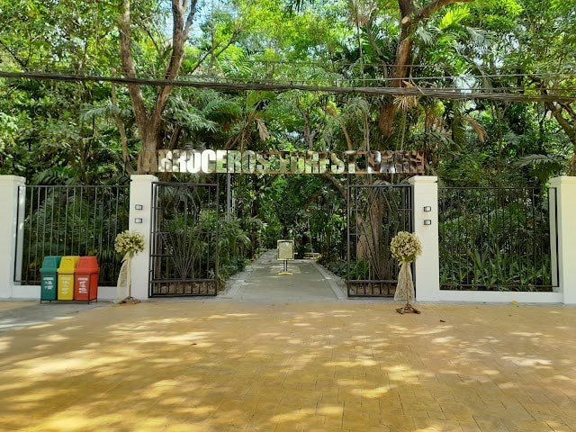

Arroceros Forest Park is one of the best places to visit in Manila for people who want to experience nature without leaving the city. Known as the "Last Lung of Manila," this urban forest is home to hundreds of trees, plants, and bird species that help provide cleaner air and a cooler environment. Unlike crowded malls and busy streets, the park offers a peaceful atmosphere where visitors can relax and enjoy the beauty of nature.
I recommend Arroceros Forest Park because it is an excellent place for students, families, tourists, and anyone looking for a quiet escape from the city's noise. Visitors can walk along shaded pathways, take photos of the greenery, observe birds, or simply sit and enjoy the fresh air. The park is also a great destination for learning about environmental conservation and appreciating the importance of green spaces in urban areas.
Another reason to visit Arroceros Forest Park is its accessibility and affordability. Located in the heart of Manila, it is easy to reach using public transportation. The park provides a refreshing experience for those who want to unwind, connect with nature, and spend quality time outdoors. Whether you are looking for a relaxing walk, a peaceful study spot, or a place to appreciate the environment, Arroceros Forest Park is a destination worth visiting.
| Address | Antonio J. Villegas Street, Ermita, Manila, Philippines |
|---|---|
| Opening Hours | 8:00 AM – 5:00 PM |
| Entrance Fee | Free |
| Best Time to Visit | Early morning or late afternoon for cooler weather |
| Main Attractions | Urban forest, walking paths, bird watching, nature photography |
| Recommended For | Students, families, tourists, nature lovers, and photographers |